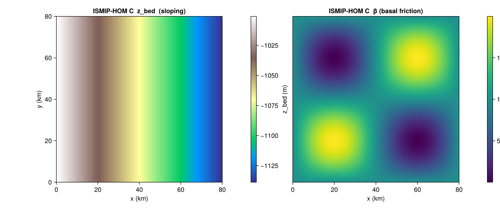

ISMIP-HOM Experiment C
HOMCBenchmark implements Experiment C from the ISMIP-HOM intercomparison (Pattyn et al. 2008): a uniform slab of ice over a gently sloping bed with a sinusoidally varying basal friction coefficient. Under fully periodic boundary conditions, the steady-state velocity field exhibits a 180° rotational anti-symmetry that any higher-order or full-Stokes solver should reproduce.
There is no closed-form velocity solution; verification is via inter-model comparison on the published tables.
Constructor
HOMCBenchmark(variant::Symbol = :C;
L_km::Real = 80.0,
dx_km::Real = 0.25 * (L_km / 10.0),
alpha_deg::Real = 0.1,
H::Real = 1000.0,
A_glen::Real = 1.0e-16,
n_glen::Real = 3.0,
beta0::Real = 1000.0,
beta_amp::Real = 1000.0,
rho_ice::Real = 910.0,
g::Real = 9.81)The grid is square [0, L] × [0, L] with cell centres at ((i − 0.5) dx, (j − 0.5) dx). The constructor requires L_km/dx_km to be an integer.
Sub-tests
:C — sloping bed, sinusoidal basal friction
The only variant currently supported. The bed is z_bed(x) = −x · tan α − H and the basal friction coefficient is
β(x, y) = β₀ + β_amp · sin(2π x / L) · sin(2π y / L) [Pa yr m⁻¹]state returns an isothermal uniform slab (H_ice = 1000 m), the sloping bed, a very negative sea level to force grounded ice, zero SMB, and arbitrary T_srf = 263.15 K / Q_geo = 50 mW m⁻². The basal-friction field β is not returned in state — it is a host-side field; use the helper IceSheetBenchmarks._hom_c_beta(b, x, y) to fill it.
b = HOMCBenchmark(:C; L_km = 80.0, dx_km = 1.0)
s = state(b, 0.0)
# s.H_ice, s.z_bed, s.z_sl, s.smb_ref, s.T_srf, s.Q_geo
Helpers
IceSheetBenchmarks.HOMCBenchmark — Type
HOMCBenchmark(variant::Symbol = :C; L_km=80.0, dx_km=L_km*0.025,
alpha_deg=0.1, A_glen=1e-16, n_glen=3.0,
beta0=1000.0, beta_amp=1000.0,
rho_ice=910.0, g=9.81)ISMIP-HOM Experiment C benchmark struct. Carries domain axes, slope, material parameters, and basal-friction perturbation parameters.
Only variant = :C is supported in this milestone.
dx_km defaults to 0.25 · (L_km / 10) (the Yelmo Fortran convention, yelmo_ismiphom.f90:60). For the canonical L = 80 km case this gives dx_km = 2.0 and Nx = Ny = 40.
The benchmark deliberately uses an unpadded [0, L_km] × [0, L_km] domain with fully-periodic BC; the Fortran f_extend = 0.5 padding is unnecessary under periodic BC.
References
- Pattyn, F. et al. (2008). Benchmark experiments for higher-order and full-Stokes ice sheet models (ISMIP-HOM). The Cryosphere, 2, 95–108.